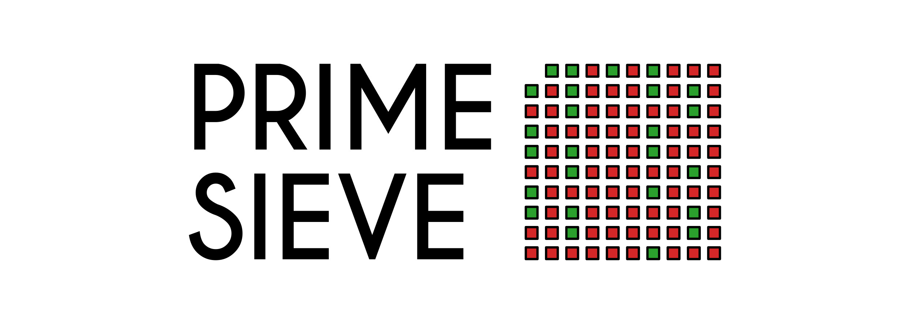

Challenge 2
Contents
{kind=link}

Fig. 71 The prime sieve#
Challenge 2#
Implementing a Prime Sieve in C++#
In a previous challenge we wrote a function to check if a specific number \(n\) was prime using trial division. After implementing this function, we did some Project Euler exercises involving prime numbers. In those problems however, we needed to find all prime numbers below som maximum \(N\). Of course, this can easily be done if you have access to a is_prime function by simply looping over numbers
(In Python)
primes = [2, 3]
c = 6
while c < N:
if is_prime(c-1):
primes.append(c-1)
if is_prime(c+1):
primes.append(c+1)
c += 6
However, more efficient and elegant options exist for finding all primes below a given threshold. One of thee methods is called the the Sieve of Eratosthenes, named afters its inventor, a greek mathematician from Alexandria 200 BC. The algorithm is very simple and elegant. Enter the wikipedia article to understand the basics (it has a nice .gif showing the algorithm in action).
The basic idea of the prime sieve is to find all primes below a certain threshold N, for example a billion. The algorithm is started by creating an array with a billion boolean elements, where we let the element with index i represent whether or not number the number i is a prime. (As we start counting at 0 in both Python and C++, I prefer creating a list of N+1 numbers so you don’t have to do annoying integer arithmetic). The algorithm now goes as follows:
Create the array, marking all elements as
True.Mark 0 and 1 as
False, as these are not prime)Now starting at element 2, loop over the entire array:
Every time you encounter a
Trueelement, mark every higher multiple of that number asFalsein the array.
And that is that. The idea is quite simple, but it might be helpful to go through it by hand to properly wrap your head around it.
Exercise 1#
Exercise (1a)#
For \(N=10\), go through the algorithm with pen and paper. What primes do you find?
A small note on efficiency#
Using a prime sieve is much faster than testing by trial division, as we do a lot less arithmetic operations only one multiplication per non-prime number, none for the primes. Compared to trial division, this is practically nothing. The only real downside is the memory requirement, as we need to keep the entire array (or sieve) in memory at one time. However, as the array only contains booleans, this doesn’t necessarily take as much space as you would expect as boolean arrays only use 1 bit per element (plus some overhead). Because of this, a prime sieve is only really feasible for relatively small thresholds, but if you can fit everything in memory, this is one of the most efficient algorithms for finding all primes below \(N\).
Exercise (1b) Making a C++ Sieve#
Create a C++ program that implements the Sieve of Eratosthenes algorithm. Test it by setting \(N=100\) and writing out all primes the algorithm finds below 100. Which should be as follows:
Exercise (1c) Creating a more practical class to work with#
This exercise is optional, if you prefer to jump straight to the Euler problems below, feel free to do so.
In the following Euler exercises, if you will need to repeat two small tasks: Check if a number is prime, and loop over primes. Both of these will need to be done repeatedly, and so we want to make this as efficient as possible. To check if a number is prime, you can return the correct index of the sieve. To loop over the primes however, we would rather have them in a vector, than a boolean array.
Therefore, create a class PrimeChecker that has the following methods
The constructor should take in an integer threshold, create a sieve of that size and sieve out all the numbers. Each time a prime is found, add it to the private
primesvector.A method
bool is_prime(int n)that uses the sieve to check if it is prime or notA method
vector<int> primesthat returns a vector of primes.
Project Euler challenges#
Now that you have a working Sieve of Eratosthenes, lets use it to solve some Project Euler problems.
Exercise 2#
Exercise (2a) - Quadratic primes#
(This is the 27th problem of Project Euler)
Euler discovered the remarkable quadratic formula:
Starting at \(n=0\) and progressing up through the consecutive integer values \(0 \leq n \leq 39\), this formula produces 40 primes in a row. However, when we get to \(n=40\), the chain of primes break.
Another such formula is
which produces 80 primes for the consecutive integer \(0 \leq n \leq 79\). The product of the two coefficients is \(a \times b = -79 \times 1601 = -126479.\)
If you consider quadratic expressions on the form
Find the product of the coefficients, \(a\) and \(b\), for the quadratic expression that produces the maximum number of primes for consecutive values of \(n\), starting with \(n=0\).
Exercise (2b) - Circular primes#
(This is the 35th problem of Project Euler)
The number, 197, is called a circular prime because all rotations of the digits: 197, 971, and 719, are themselves prime.
There are thirteen such primes below 100: 2, 3, 5, 7, 11, 13, 17, 31, 37, 71, 73, 79, and 97.
How many circular primes are there below one million?
Exercise (2c) - Truncatable primes#
(This is the 37th problem of Project Euler)
The number 3797 has an interesting property. Being prime itself, it is possible to continuously remove digits from left to right, and remain prime at each stage: 3797, 797, 97, and 7. Similarly we can work from right to left: 3797, 379, 37, and 3.
Find the sum of the only eleven primes that are both truncatable from left to right and right to left.
(NOTE: 2, 3, 5, and 7 are not considered to be truncatable primes.)
Exercise (2d) - Pandigital prime#
(This is the 41st problem of Project Euler)
We shall say that an \(n\)-digit number is pandigital if it makes use of all the digits 1 to \(n\) exactly once. For example, 2143 is a 4-digit pandigital and is also prime.
What is the largest \(n\)-digit pandigital prime that exists?
(Hint: We know there can be no 8-digit or 9-digit pandigital primes because these numbers would be divisible by 3).
Exercise (2e) - Distinct primes factors#
(This is the 47th problem of Project Euler)
The first two consecutive numbers to have two distinct prime factors are:
\(14 = 2 \times 7.\)
\(15 = 3 \times 5.\)
The first three consecutive numbers to have three distinct prime factors are:
\(644 = 2^2 \times 7 \times 23.\)
\(645 = 3 \times 5 \times 43.\)
\(646 = 2 \times 17 \times 19.\)
Find the first four consecutive integers to have four distinct prime factors each. What is the first of these numbers?